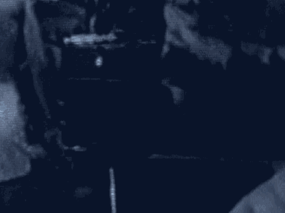

22 of the counts that are specified above in Section I, Part B.
23 In other words, a gateway is a threshhold. Unless that
24 threshhold is crossed by you unanimously finding one gateway
25 factor applying to that count, consideration with respect to
7235
1 that count is over.
2 If there is no capital count for which you
3 unanimously find the gateway factor has been proven beyond a
4 reasonable doubt, skip forward to Section VI, and complete
5 that Section in accordance with the directions there. Then
6 notify the Court you have completed your deliberations. If
7 you found at least one gateway factor with regard to one or
8 more capital counts, continue on to Section II.
9 We return to charge itself on page 10 and we deal
10 with statutory aggravating factors.
11 If and only if you unanimously find that the
12 government has proven beyond a reasonable doubt that at least
13 one of the four gateway factors exists as to a particular
14 capital count, you must then proceed to determine whether the
15 government has proven beyond a reasonable doubt the existence
16 of any of the following four statutory aggravating factors
17 with respect to that count.
18 1. The deaths, and injuries resulting in death,
19 occurred during the commission or attempted commission of
20 another offense, namely one of the following offenses listed
21 under Title 18, United States Code, Section. Then it lists
22 them.
23 2. The defendant in the commission of the offense
24 knowingly created a grave risk of death to one or more persons
25 in addition to the victims of the offense.
7236
1 3. The defendant committed the offense after
2 substantial planning and premeditation to cause the death of
3 one or more persons or to commit an act of terrorism.
4 4. The defendant intentionally killed or attempted
5 to kill more than one person in a single episode.
6 At this point the law directs you to consider and
7 decide, separately as to each of the capital counts for which
8 you have unanimously found the existence of at least one
9 gateway factor, the existence or nonexistence of the statutory
10 aggravating factors specifically claimed by the government.
11 You are reminded that to find the existence of a
12 statutory aggravating factor as to a particular count, your
1